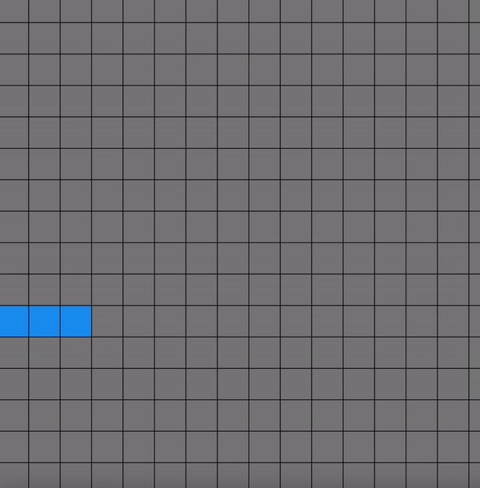

MP3 Writeup
Overview
In terms of functionality, little has changed between my MP2 to my MP3. The bulk of my time was spent integrating my game into React, which took much longer than anticipated. The game is hosted here, and the code can be found here. I also spent a lot of time cleaning up my code because it was really messy, and I had a handful of bugs in my original game which I fixed. I'm planning to continue building upon my Tetris game for my final project using React so majority of my time was spent integrating my game into React, which took much longer than anticpated. Because of this, I was unable to integrate P5 sound into my game but I plan to do this for future steps. The libraries I used were:
- React
- React-P5
- React-gh-pages
- P5
I was also planning on moving my portfolio to React, but I had several roadblocks which prevented me from doing this, so I'm planning on doing this later.

Process
My steps were as followed:
- Integrate my P5 game into React using React-P5
- Re-implement keyboard controls for React by using event handling
- Clean up code
- Fix miscellaneous bugs
Issue Deep Dive
One issue I ran into was fixing a bug where players could move their Tetris block outside of the grid (shown above). This involved creating some conditional statements to determine the block starting coordinates & ending coordinates and comparing it to the coordinates of the grid. This was fairly easy to achieve as my units are consistent throughout the program, as all rectangles are the same size. The issue I spent the most time debugging was figuring out how to handle events in my React. Originally, I used a library called p5-react-wrapper, but it had really poor documentation on how to acheive this. I eventually switched to using p5-react and I was eventually able to re-implement the keyboard controls.
Ideas & Future
I think I have implemented almost all the basic functionality of Tetris, besides allowing blocks to rotate. As I mentioned earlier, I'm planning on continuing to work on this game for my final project, and my end goal is to record player statistics and build additional features that leverage this data, which could include:
- Implement a high-fidelity tetris UI
- Build a login feature for users to sign up
- Store data about individual users in persistent storage
- Build a user data schema to store relevent information
- Allow players to view personal statistics across all the games they have played
- Leaderboards showing top players across a variety of statistics